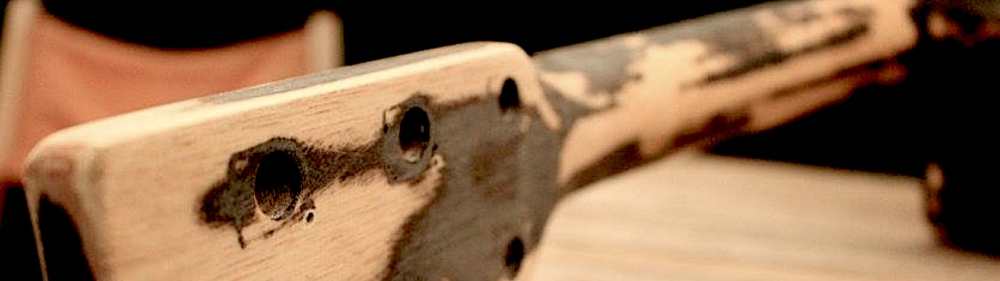

Confinement Artistique CoVid-19
Au mois de mars 2020, la France est paralysée par les mesures de confinement suite à la pandémie de CoVid-19 CoronaVirus. Tous mes spectacles sont annulés, et je me vois contraint d'être confiné à la maison.
Je me retrouve avec pas mal de temps libre, mais aussi beaucoup d'envies ! Je me lance alors dans un confinement artistique, pour profiter de ces moments pour créer : de la musique, du jeu de rôle, un podcast...
Au programme : un journal de bord quotidien sur Twitter et Youtube pour parler des projets choisis et de leur avancée, et bien sûr les productions du jour ! Les chansons ainsi crées sont disponibles sur Bancamp.